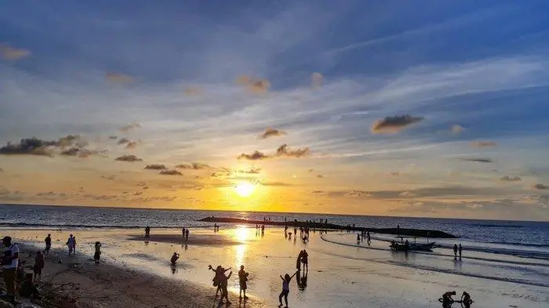
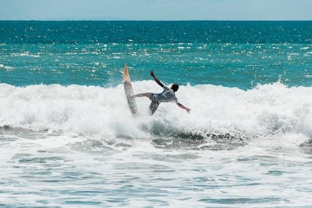
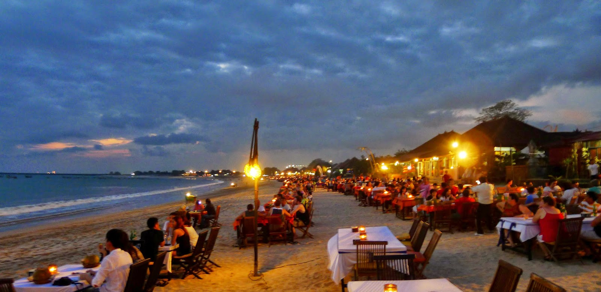

Sejarah Singkat Pantai Kuta
Pantai Kuta terletak di sebelah selatan Pulau Bali dan merupakan salah satu destinasi wisata yang paling populer di Indonesia. Dahulu, Pantai Kuta merupakan desa nelayan kecil dan pelabuhan dagang yang ramai, terutama untuk perdagangan dengan para pedagang dari luar negeri. Sejak tahun 1970-an, ketika pariwisata di Bali mulai berkembang pesat, Pantai Kuta berubah menjadi pusat kegiatan wisata yang terkenal hingga mancanegara.
Pemandangan indah matahari terbenam di Pantai Kuta.
Keindahan dan Daya Tarik Pantai Kuta
Pantai Kuta dikenal dengan pasir putihnya yang lembut, ombak yang cocok untuk berselancar, serta pemandangan matahari terbenam yang memukau. Pantai ini memiliki garis pantai sepanjang 5 km yang selalu ramai dikunjungi wisatawan lokal maupun internasional. Selain itu, Pantai Kuta juga menawarkan berbagai fasilitas seperti restoran, bar, toko suvenir, dan hotel-hotel mewah.
Ombak yang Cocok untuk Berselancar
Ombak di Pantai Kuta cukup besar dan konsisten, menjadikannya tempat yang ideal untuk olahraga selancar. Banyak sekolah selancar di sekitar pantai yang menawarkan pelatihan bagi pemula maupun profesional. Tak heran jika Pantai Kuta sering menjadi lokasi kompetisi selancar berskala internasional.
Wisatawan menikmati olahraga selancar di Pantai Kuta.
Suasana Pantai yang Hidup
Pantai Kuta bukan hanya tempat untuk menikmati keindahan alam, tetapi juga menawarkan hiburan dan aktivitas lainnya. Mulai dari berjemur di bawah matahari, bermain voli pantai, hingga menikmati pertunjukan seni tradisional. Di malam hari, area di sekitar Pantai Kuta menjadi pusat hiburan malam dengan berbagai klub dan bar yang menawarkan musik live dan pesta pantai.
Suasana malam yang meriah di sekitar Pantai Kuta.
Lokasi dan Akses Menuju Pantai Kuta
Pantai Kuta terletak sekitar 10 menit berkendara dari Bandara Internasional Ngurah Rai, Denpasar. Akses menuju Pantai Kuta sangat mudah dengan berbagai pilihan transportasi, seperti taksi, bus, atau penyewaan sepeda motor. Lokasinya yang strategis membuat Pantai Kuta menjadi destinasi yang wajib dikunjungi ketika berada di Bali.
Fasilitas di Pantai Kuta
Pantai Kuta menawarkan berbagai fasilitas untuk kenyamanan pengunjung, antara lain:
- Hotel dan penginapan berbagai kelas, mulai dari hotel berbintang hingga penginapan budget.
- Restoran dan kafe dengan berbagai pilihan kuliner lokal dan internasional.
- Tempat penyewaan papan selancar dan perlengkapan pantai.
- Pusat perbelanjaan dan toko suvenir.
- Area parkir yang luas.
Tips Berkunjung ke Pantai Kuta
Beberapa tips untuk menikmati liburan di Pantai Kuta:
- Datanglah pada sore hari untuk menikmati pemandangan matahari terbenam yang indah.
- Gunakan tabir surya untuk melindungi kulit dari sinar matahari.
- Bawa perlengkapan pantai seperti handuk, kacamata hitam, dan topi.
- Jaga kebersihan pantai dengan tidak membuang sampah sembarangan.